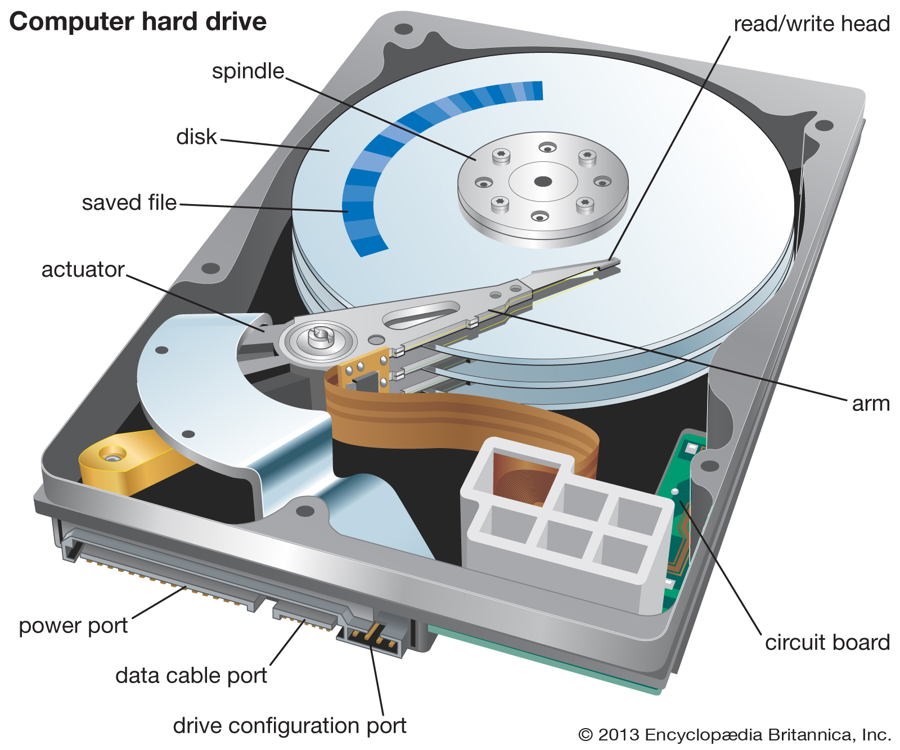

Hard Disk Drive
A hard disk drive (HDD), hard disk, hard drive, or fixed disk is an electro-mechanical data storage device that stores and retrieves digital data using magnetic storage and one or more rigid rapidly rotating platters coated with magnetic material. The platters are paired with magnetic heads, usually arranged on a moving actuator arm, which read and write data to the platter surfaces. Data is accessed in a random-access manner, meaning that individual blocks of data can be stored and retrieved in any order. HDDs are a type of non-volatile storage, retaining stored data even when powered off.

A computer requires an operating system to allow users to interact with and use it. The operating system interprets keyboard and mouse movements and allows for the use of software, like an Internet browser, word processor, and video games. To install a computer operating system, a hard drive (or another storage device) is required. The storage device provides the storage medium where the operating system is installed and stored. A hard drive is also required for the installation of any programs or other files you want to keep on your computer. When downloading files to your computer, they are permanently stored on your hard drive or another storage medium until they are moved or uninstalled.